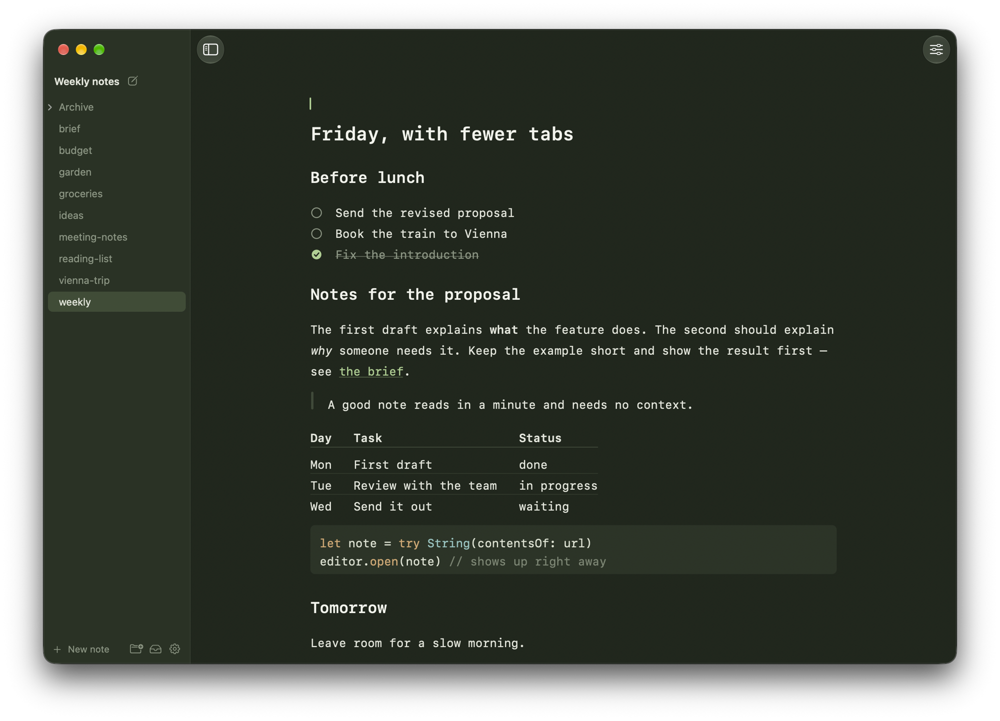
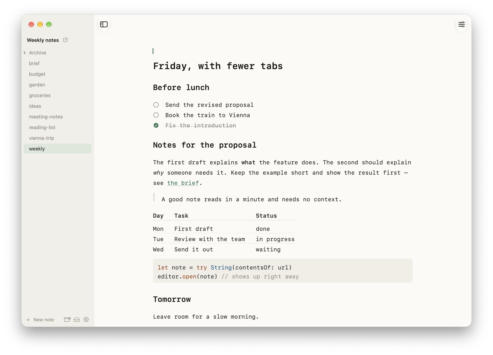
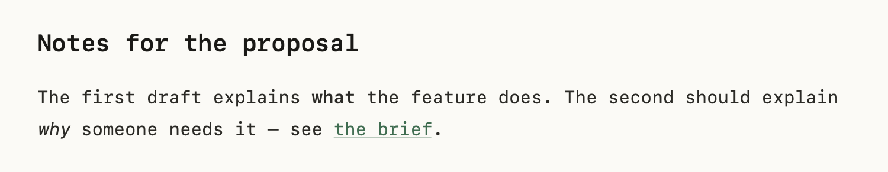
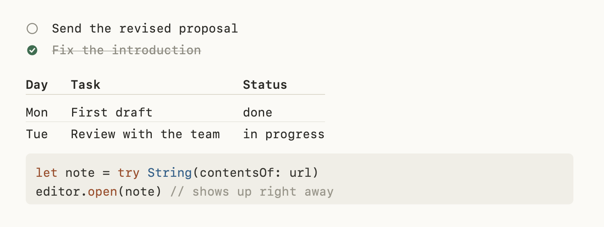

Meadow opens a folder of plain .md files and shows them as finished text. Markdown appears only on the line you're editing. It launches in a third of a second.
Swift + AppKit · no web view · 4 MB · macOS 14+ · MIT


Your files stay files.
The editor always holds the raw Markdown. Meadow converts nothing and keeps no database: everything you see is styling on top of the text.
Headings, bold, italic, links and quotes
Tasks as circles you tick with a click
Tables that line up, code that's highlighted
Autosave half a second after you stop typing
Live reload when git, iCloud or Obsidian change a file
Your next note
Markdown hides until you need it.
Hashes, asterisks and brackets stay out of sight. Put the cursor in a paragraph and its source shows up; move away and it's clean again.

Tasks and tables look like a document.
- [ ] becomes a circle, ragged tables line up, and code is highlighted. Return continues a list, Tab nests it, and ⌘B, ⌘I and ⌘K work as expected.

A folder, not a vault.
The sidebar shows any folder as it is. Changes from git, iCloud or Obsidian appear right away.
› Archive—
brief43 B
budget49 B
ideas44 B
vienna-trip38 B
weekly753 B
Press Space in Finder.
The Quick Look extension renders .md files the way the editor does, with tasks, tables and highlighting.
JSON opens too.
package.json, manifest.json and friends show up in the sidebar next to your notes and open as highlighted source, with Markdown switched off. Finder's Open With and Quick Look handle them as well.
Each keystroke restyles only the lines you touched: typing in a 1 MB JSON file takes 3.7 ms.
Built native. On purpose.
The brief was simple, light and fast. Every choice below follows from it, and the benchmarks further down are how we checked.
Swift 5AppKitTextKit 1cmark-gfmFSEventsQuick LookXcodeGen
Native, not a web view
Swift + AppKit
A web view brings a browser engine along: the two Electron apps in the benchmarks use 860 MB to 1.3 GB of memory and take up to 2 s to draw a note. AppKit gives windows, the sidebar, text rendering and VoiceOver for free.
The parser isn't the bottleneck
Not Rust
cmark parses a 42 KB note in 3 ms; the time goes to launching and drawing text, which AppKit already does natively. Rust GUI toolkits don't feel like macOS, and Tauri is a web view again.
The text you edit is the file
TextKit 1 + NSTextView
Styling is text attributes. Hidden markers, task circles and aligned tables are glyph-level tricks in a custom layout manager, and long files are laid out lazily.
The parser GitHub uses
cmark-gfm
CommonMark plus GitHub tables, tasks and strikethrough, through Apple's swift-cmark. Where cmark reports wrong positions, Meadow checks the marker characters before trusting them.
Only touched blocks restyle
Incremental styling
Each edit restyles from the changed block to the point where the old and new structure agree again. A fuzz test makes thousands of random edits and compares the result with a full restyle.
Other apps can edit too
FSEvents
Meadow watches the folder and reloads notes changed elsewhere. If a file changes while you have unsaved edits, it keeps both versions instead of overwriting one.
By the numbers
Part
Lines
Editor engine (MeadowKit)
2,622
App and Quick Look
1,337
Dependencies
1
Measured before release
Fast. Measured.
Meadow against the editors already installed on the test Mac: Antigravity IDE (the default app for .md files there), Xcode, TextEdit and Obsidian. Every app is quit before each run and opens the same note, the way a double-click in Finder does.
Open a folder. Start writing.
There's no signed download yet, so Meadow builds from source in a couple of minutes. You'll need Xcode and XcodeGen.
Tools. Xcode from the App Store, XcodeGen from Homebrew.
brew install xcodegen
Source. Clone the repository.
git clone https://github.com/gerasimoph/meadow
Build. The script builds a Release copy into Applications. Set your own team in project.yml for signing.
cd meadow && ./scripts/install.sh
A good note reads in a minute and needs no context.